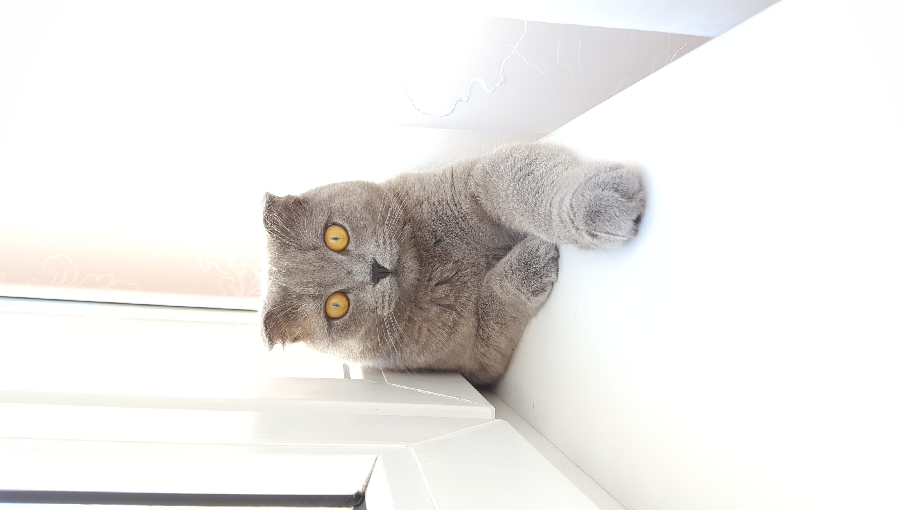
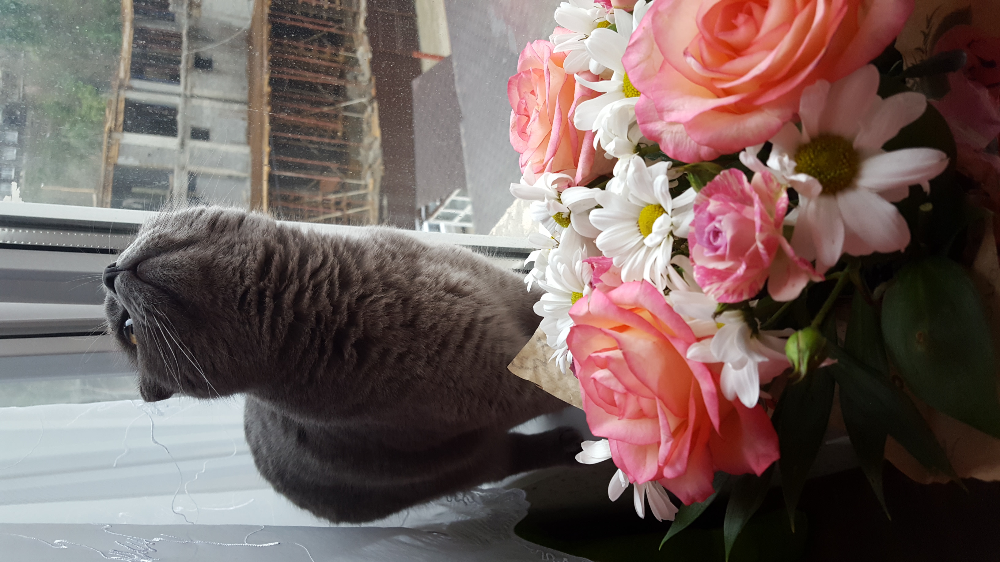

Шотла́ндская вислоу́хая ко́шка или ско́ттиш-фолд (англ. Scottish Fold)
порода домашних кошек с характерными загнутыми вперёд и вниз ушами, что вызвано действием доминантного гена, который возник в результате естественной мутации и оказывающий влияние на хрящи во всём организме. Это придаёт голове кошки характерный вид, которую часто описывают как «похожую на совиную».
Характер
Независимо от типа ушей, скоттиш-фолды обычно добродушные, спокойные и хорошо уживаются с другими животными, с которыми совместно содержатся. Зачастую, становятся очень привязанными к ухаживающему за ними человеку, и по своей натуре достаточно привязчивы. Кошки очень игривые, хорошо ухаживают за собой, обладают хорошим интеллектом. Шотландские вислоухие невероятно умны и любят играть со сложными игрушками, требующими решения определенной задачи. Хорошо переносят уличный выгул, очень любят подвижные игры на свежем воздухе. Плохо переносят длительное одиночество, которое может приводить их в депрессивное состояние.
Особенности поведения
Скоттиш-фолды известны умением спать на спине. У кошек, как правило, мягкий голос. Они обладают сложным репертуаром мяукающих и мурчащих звуков, которые не наблюдаются у более распространённых пород. Также известны умением сидеть на задних лапах, согнувшись в области живота. Эту позу часто называют «позой Будды».
Томас


Мои фоточки
Давайте знакомиться!
Всем привет! Меня зовут Томас, мне 6 лет. Я шотландский вислоухий котик, живу в городе Сочи! Я очень люблю играть, охотиться, спать и помогать во всем своей хозяйке. Конечно же я очень люблю покушать.